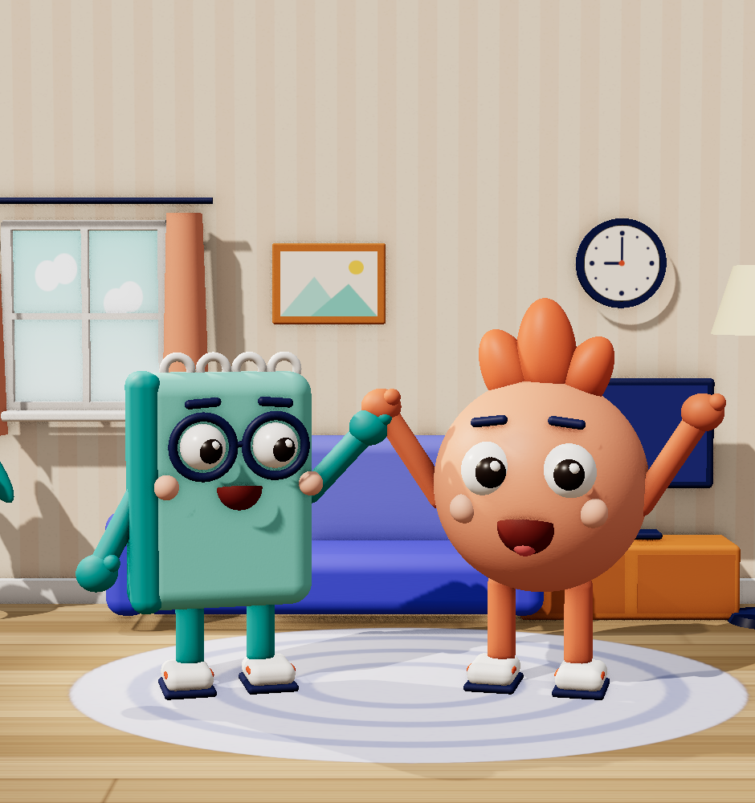
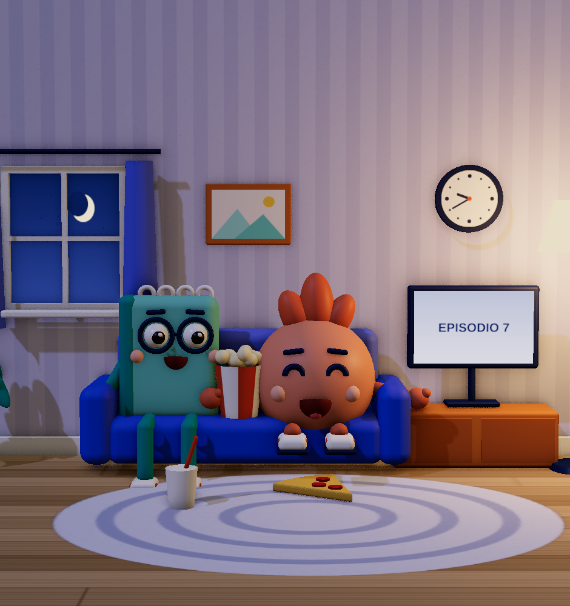
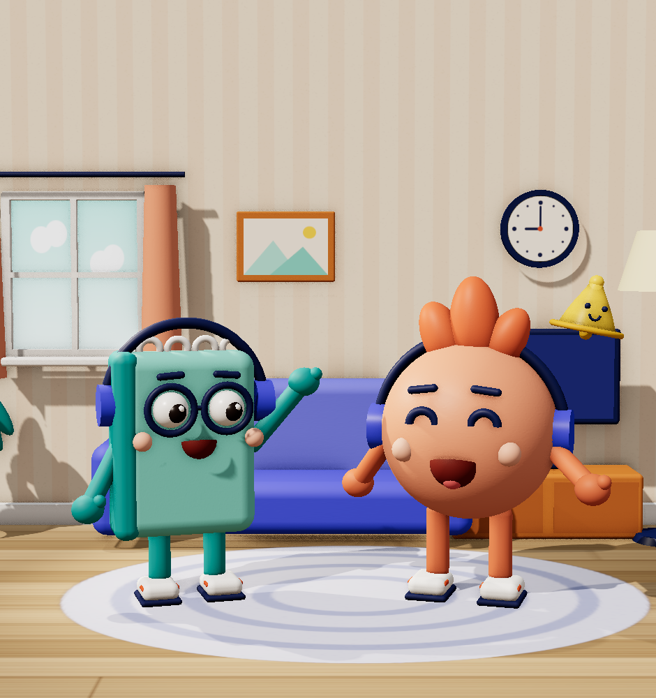

WeSelf
WeSelfAgenda e Voglia:

ORE 9:00 ORE 17:58
ORE 17:58
ORE 21:40
IL GIORNO DOPOFonte: Gollwitzer & Sheeran, 2006
WeSelfAgenda e Voglia:

ORE 9:00ORE 17:58
ORE 21:40
IL GIORNO DOPOFonte: Gollwitzer & Sheeran, 2006